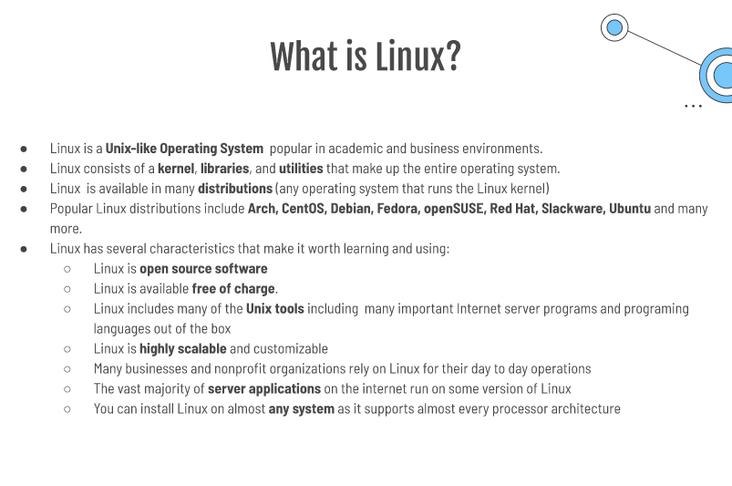
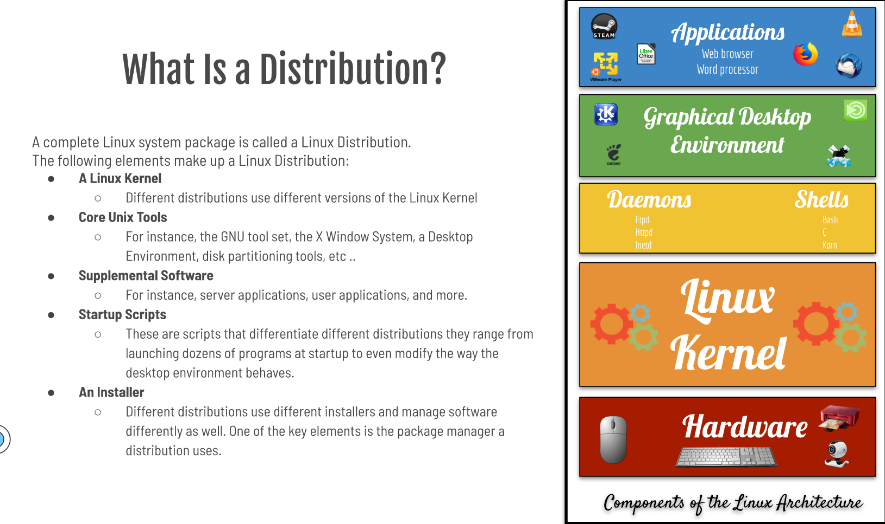
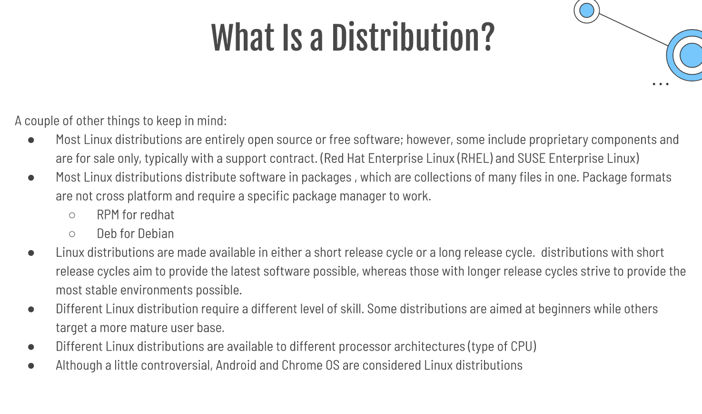
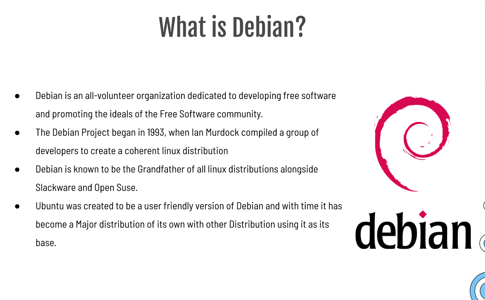
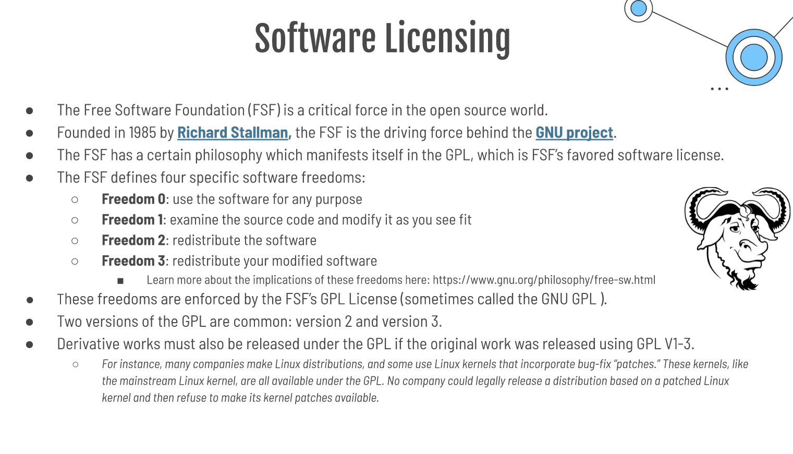
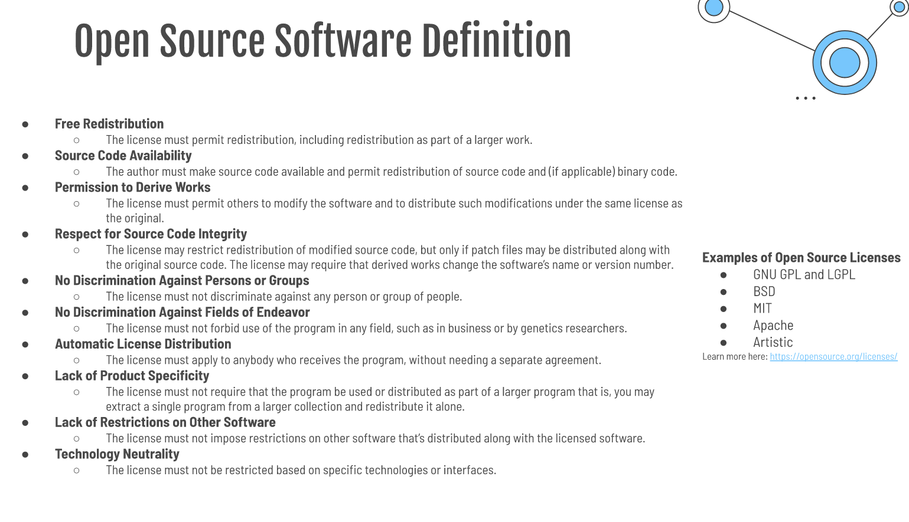

Ubuntu Server is a server operating system that was developed by Canonical. Ubuntu Server works with nearly any hardware or virtualization platform. IT can serve up websites, file shares, and containers.Ubuntu server runs on all major architectures: x86, x86-64, ARM v7, ARM64, POWER8, and IBM System z mainframes via LinuxONE. Ubuntu is a server platform that anyone can use for websites, FTP, email servers, file and print servers, development platform, container deployment, cloud services, and database servers.
NGINX (pronounced as Engine-X) is a free and open-source web server software, load balancer, and reverse proxy optimized for very high performance and suability. It also offers low memory usage and high concurrency--which is why it is the preferred web server for powering-high traffic websites.
Apache is a open source web server that's available for Linux servers free of charge. It provides many power features that includes dynamically loadable modules, robust media support, and extensive integration with other popular software.